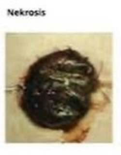

Seputar terkait Stoma
Apa itu Stoma?
Ostomi atau stoma adalah pembuatan lubang dengan membuka dinding pertu (abnomen) mengeluatkan organ usus kecil dan atau usus besar ke permukaan kulit dengan proses pembedahan dengan tujuan mengevaluasi isi dari sisa - sisa metabolisme (feses) keluar tubuh (Kugler et al., 2021).

Jenis Stoma
1. Colostomy yaitu lubang yang dibuat dengan pembedahan dimana usus besar yg dibawa keluar melalui dinding perut untuk membuat stoma, pembuangan dari usus ke luar melalui stoma ke dalam kantong stoma (Burgess - Stock et al., 2022)
2. Ileostomy adalah lubang dengan proses pembedahaan dimana ileum bagian terakhir dari usus kecil yang dibawa melalui dinding perut untuk pembentukan stoma (Burgess - Stock et al., 2022)
3. Urostomy adalah pengalihan urine yang dibuat dengan proses pembedahan dengan menyambungkan ileum dengan ureter (UOAA, 2020). Urostomy adalah lubang yang dibuat melalyi pembedahan di dinding perut tempat urine keluar. Urostomy dibuat saat kandung kemis tidak berfungsi dengan baik atau harus di angkat (Burgess - Stock et al., 2022)
Klasifikasi Stoma
1. Loop stoma merupakan suatu stoma yang memiliki dua bukaan berbeda. Seluruh lingkaran usus dibawa keluar pada permukaan perut melalui suatu sayatan yang kemudian dibuka sehingga memperlihatkan dua jalur ke usus yaitu jalur proksimal dan distal dimana jalur proksimal berfungsi untuk mengeluarkan tinja/feses sedangkan jalur distal memungkinkan lendir untuk keluar (Berti - Hearn & Elliott,2019).

2. Double barrel colostomy merupakan jenis kolostomi yang dilakukan setelah reseksi usus yang melibatkan mesentrium dan dilakukan pada kondisi seperti penyakit radang usus, kanker kolorektal, reseksi segmen usus gangrene, reseksi volvulus sigmoid gangrene atau pada luka tembus usus (Agastya Maria & Lieske Affiliations, 2021).

3. End Stoma merupakan jenis stoma pada kolostomi tang paling umum dan sering dilakukan kasus volvulus sigmoid gangrene, kanker kolorektal setelah reseksi abdominaperineal, simpul eleosigmoid, penetrasi cedera perut, colitis ulseratif, kkebocoran anastomosis, kanker anorektal serta cedera perineum dimana tindakannya melibatkan penutupan segmen, distal dengan fiksasi ke dinding perut (Agastya Matia & Lieske Affiliations, 2021).

Indikasi Pemasangan Stoma
1. Kanker kolorektal adalah tumor ganas/maligna yang muncul pada jaringan epitel kolon dan rectum yang disebabkan oleh faktor diet tinggi lemak, rendah serat, usia, serta riwayat keluarga dimana gejala yang ditimbulkan meliputi diari atau sembelit, perut terasa penuh, feses disertai darah, sering mengalami keram perut atau perasaan kembung, feses yang lebih sedikit dari biasanya serta kehilangan berat badan tanpa sebab yang diketahui (Sayuti, 2019).

2. Colitis ulseratif adalah peradangan kronis pada usus besar atau kolon dan rectum dimana terdapat tukak atau luka pada dinding usus yang menyebabkan tinja bercampur darah (Sayuti, 2019).

3. Divertikulitis merupakan gangguan sistem gastrointestinal yang dikaitkan dengan beberapa faktor risika morbiditas seperti obesitas, diet, dan aktivitas fisik dimana gaya hidup dan diet mempengatuhi terjadinya diverticulitis (Peery er al., 2021).

4. Trauma abdomen adalah cedera pada abdomen yang disebabkan oleh benda tumpul maupun tajam yang pada umunmnya disebabkan oleh kecelakaan lalu lintas sehingga menyebabkan cedera pada organ di dalam abdomen seperti hati, limpa, usus serta ginjal (Singh et al., 2021).
Komplikasi Stoma
1. Prolaps : Stoma menonjol keluar lebih dari yang seharusnya.

2. Retraksi : Stoma masuk ke dalam tubuh, membuatnya sulit untuk mengakses dan mengelolanya.
3. Peristomal hernia (PSH) terjadinya hernia sekitar stoma, dimana bagian usus menonjol keluar dari dinding perut.
4. Stenosis sering juga disebut dengan obstruksi usus besar.
5. Iskemia atau nekrosis adalah stoma terlihat menjadi kehitaman.

6. Granuloma adalah adanya jaringan granulasi pada stoma dengan tumbuh secara berlebihan dan mudah berdarah.
7. Iritasi peristonal merupakan kondisi hipersensitifitas pada kulit sekitar stoma yang menghasilkan reaksi inflamasi yang menyebabkan rasa gatal - gatal, kulit kemerahan dan menimbulkan rasa nyeri.

8. Trauma Peristomal terjadi akibat rusaknya lapisan kulit sekitar stoma (kehilangan lapisan epidermis) yang disebabkan oleh pelepasan kantong yang terlallu sering, adanya tekanan pada kantong.

9. Seperasi stoma adalah terpisahnya stoma dengan kulit sekitar stoma yang disebabkan adanya infeksi, benda asing seperti jahitan sekitar stoma dan infeksi.

Aksesoris Stoma
1. Kantong ostomi : Bagian utama yang menampung output dari stoma. Tersedia dalam berbagai ukuran dan jenis (satu bagian atau dua bagian).

2. Wafer/Flage : Bagian yang menempel pada kulit di sekitar stoma dan menyatukan kantong ostomi dengan kulit.
3. Pelindung kulit (Skin Barrier) : Ditempatkan antara wafer dan kulit untuk melindungi kulit dari iritasi dan menambah daya rekat.

4. Pemotong kantong (Scissors) : Digunakan untuk memotong wafer atau kantong sesuai ukuran stoma.
5. Peralatan pembersih : Produk pembersih khusus untuk membersihkan area stoma dan peralatan stomi.
6. Alat Pengukur Stoma : Digunakan untuk mengukur ukuran stoma guna memastikan wafer dan kantong yang digunakan sesuai.
7. Pouch over : Pennutup tambahan untuk kantong ostomi yang memberikan kenyamanan dan menyembukan kantong.

8. Penutup mini (Mini Caps) : Digunakan untuk situasi tertentu dimana kantong pernuh tidak diperlukan, seperti saat berhubungan seksual atau selama aktivitas tertentu.